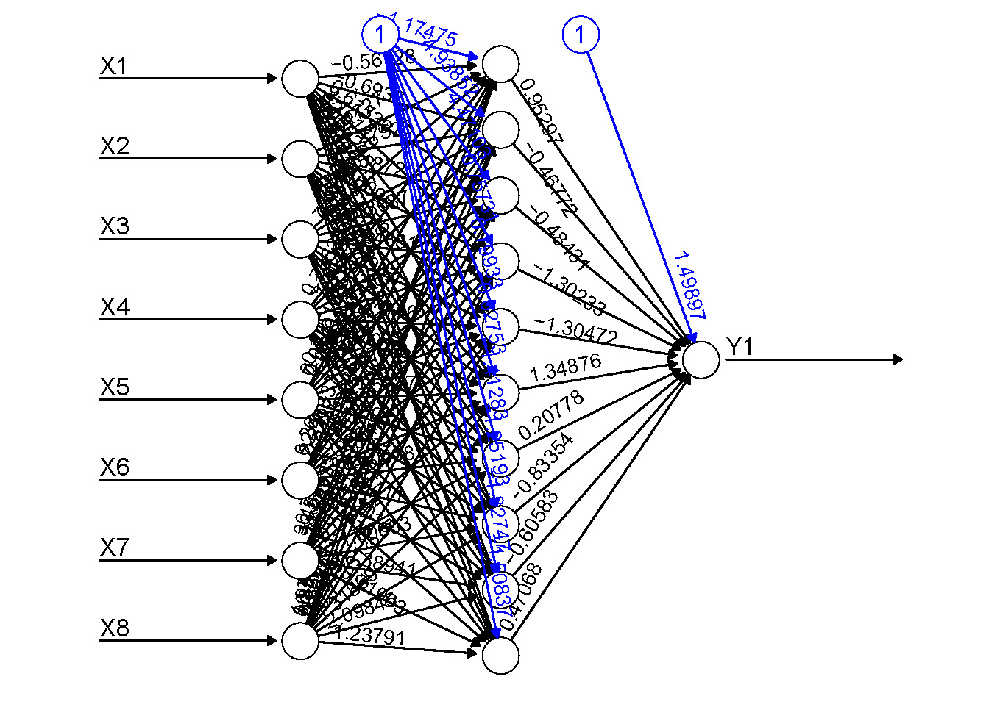
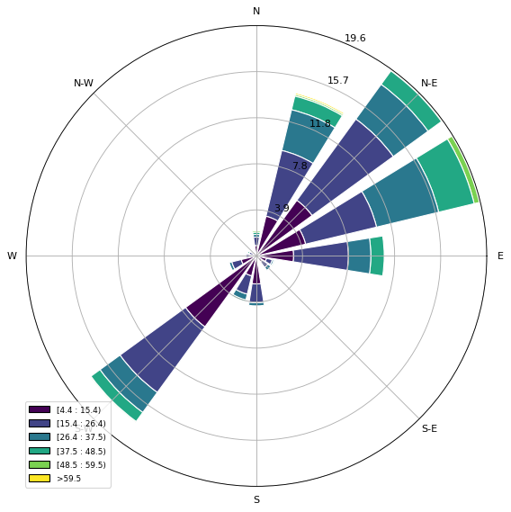
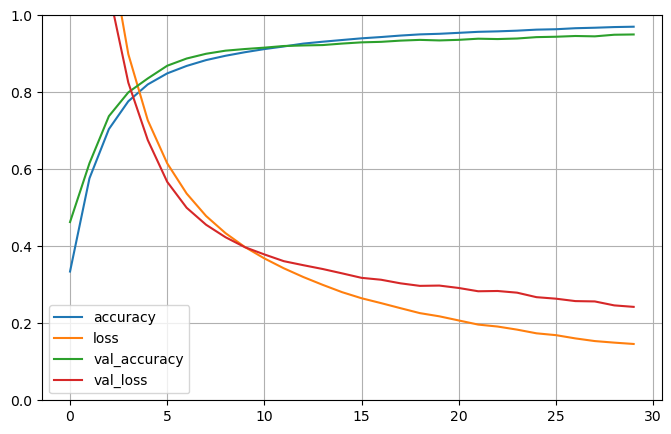

PROJECTS
Click on titles to take a look at the code.Melanoma Classifier
A hybrid machine learning model & pipeline that classifies early cases of melanoma, predicting with 94.8% sensitivity. Won 1st in track and 3rd overall out of 156 participants at UCI Datathon 2025.
Grocery-Sales Forecasting
A machine learning model & training pipeline that predicts daily grocery sales across 52 stores.
Next-Day Rainfall Forecasting
A machine learning pipeline & training model for forecasting rainfall based on meteorological data.
CNN Traffic Sign Classifier
A image classification neural network model & pipeline for traffic sign recognition.
Monte Carlo π Estimator
A Monte Carlo simulation and visualization to estimate the value of π.
Full-stack Blog CRUD
A full-stack blog web app with full CRUD (Create-Read-Update-Delete) functionality.
This Website
A dynamic personal website using HTML/CSS Bootstrap, JavaScript.
Neural Network Visualization

Wind Rose Polar Graph

Traffic Sign Gradient Descent

Monte Carlo π Estimator